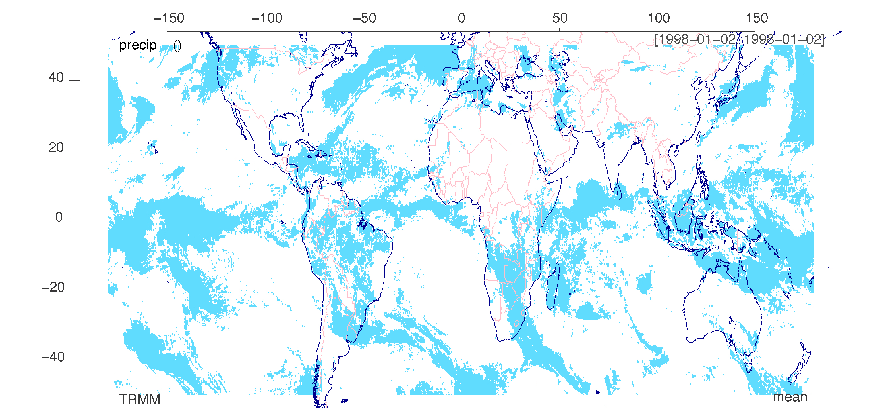
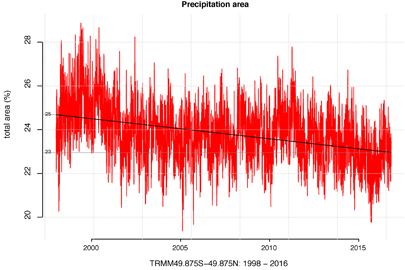
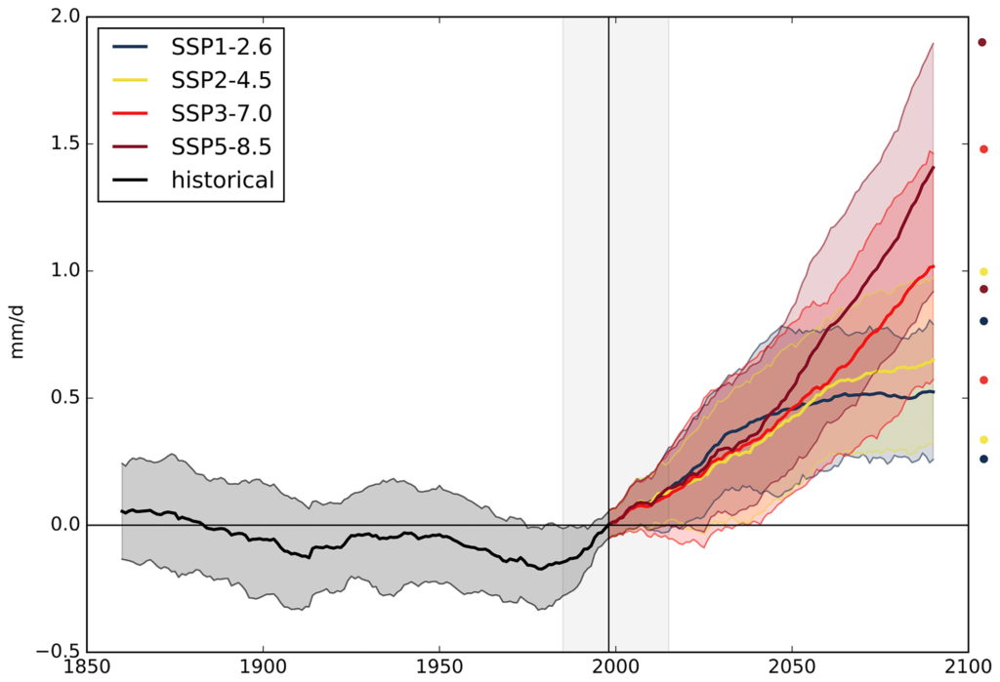
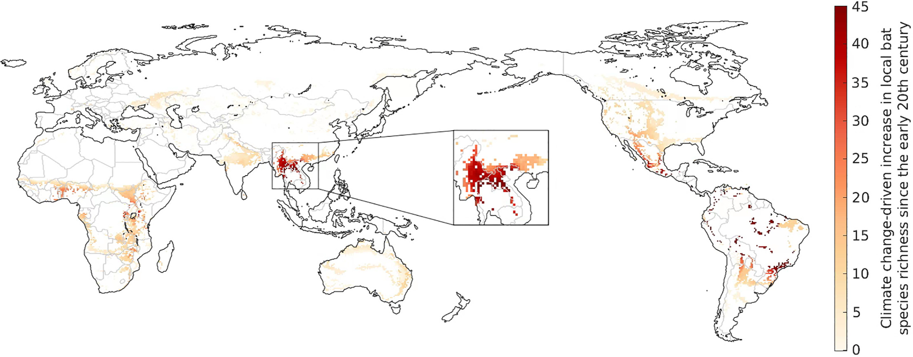

28 Impacts
Overview of Nature Communications on Climate Change Impacts:
28.1 Draught
28.1.1 European Draught Extremes
The series of severe droughts and heatwaves in Europe since 2014 is the most extreme for more than 2,000 years, research suggests.
The study analysed tree rings dating as far back as the Roman empire to create the longest such record to date. The scientists said global heating was the most probable cause of the recent rise in extreme heat.
The study also found a gradual drying of the summer climate in central Europe over the last two millennia, before the recent surge. The scientists ruled out volcanic activity and solar cycles as causes of this long-term trend and think subtle changes in Earth’s orbit are the cause.
The scientists said changes in the position of the jet stream and the circulation of air over the continent caused the droughts, and that climate change was probably the underlying driver.
Previous climate reconstructions from tree rings used width and wood density to determine temperature. The Büntgen-led study used measurements of carbon and oxygen isotopes to show how much water was available to the trees, giving a record of droughts. This showed that the high frequency of recent European droughts was unprecedented, even compared with severe historical droughts such as the Renaissance drought in the early 16th century.
The wood samples come from the Czech Republic and Bavaria in Germany, and represent climate conditions across central Europe. High temperatures were the main cause of recent droughts, and these have been seen across Europe.
Abstract Büntgen
Europe’s recent summer droughts have had devastating ecological and economic consequences, but the severity and cause of these extremes remain unclear. Here we present 27,080 annually resolved and absolutely dated measurements of tree-ring stable carbon and oxygen (δ13C and δ18O) isotopes from 21 living and 126 relict oaks (Quercus spp.) used to reconstruct central European summer hydroclimate from 75 bce to 2018 ce. We find that the combined inverse δ13C and δ18O values correlate with the June–August Palmer Drought Severity Index from 1901–2018 at 0.73 (P < 0.001). Pluvials around 200, 720 and 1100 ce, and droughts around 40, 590, 950 and 1510 ce and in the twenty-first century, are superimposed on a multi-millennial drying trend. Our reconstruction demonstrates that the sequence of recent European summer droughts since 2015 ce is unprecedented in the past 2,110 years. This hydroclimatic anomaly is probably caused by anthropogenic warming and associated changes in the position of the summer jet stream.
28.2 Rainfall
28.2.1 Decreased Gloabel Precipitation Area
Benestad
The total area with 24 hrs precipitation has shrunk by 7% between 50°S–50°N over the period 1998–2016, according to the satellite-based Tropical Rain Measurement Mission data. A decrease in the daily precipitation area is an indication of profound changes in the hydrological cycle, where the global rate of precipitation is balanced by the global rate of evaporation. This decrease was accompanied by increases in total precipitation, evaporation, and wet-day mean precipitation. If these trends are real, then they suggest increased drought frequencies and more intense rainfall. A linear dependency was also found between the global mean temperature and the 50°S–50°N daily precipitation area with a slope value of −17 × 106km2∕°C.

Figure: Global Rainfall Area on a random day.

Figure: Time series of the rainfall area based on daily TRMM data expressed as the fraction of the total surface area between 50°S–50°N. A linear trend analysis indicates a change in the estimated rainfall area from 25% to 23% over the 1998–2016 period. The trend is statistically significant at the 1% level. (TRMM- Tropical Rainfall Measurement Mission).
The study of the precipitation area AP is both scientifically interesting and important in terms of our understanding of the hydrological cycle and climate change. A 7% decrease in AP over two decades is dramatic, especially if it reflects a real ongoing long-term change. The precipitation between 50°S–50°N dominates the water budget of the global hydrological cycle both because it represents 77% of the surface area and because the precipitation is most intense in the tropics (table 2). One plausible physical explanation for the observed decline may be that an increased rate of atmospheric overturning [7] may have resulted in more convection and precipitation from cumulonimbus type clouds rather than more spatially extensive stratonimbus clouds. Such changes will have consequences even if they only are due to slow natural variability.
A regression analysis suggested that the daily precipitation area diminishes with the global mean temperature, and used with global climate model simulations, crude projections for the future suggested a decrease in daily precipitation area by 28% by 2100. For monthly accumulated precipitation, however, the area appears to experience an increase over time, as the area of monthly precipitation is influenced by migratory phenomena and the area is estimated for amounts that are aggregated over longer time scales.
28.2.2 Landslides
The global landslide hotspot is located in South Asia, driven by the summer (SW) monsoon. The monsoon drives a period of intense and prolonged rainfall in the period centred on June to September. Rainfall levels can be high – in some cases the highest in the world. The monsoon also drives convective activity that can cause cloudbursts. Together, these effects trigger large numbers of landslides, with catastrophic outcomes.
Thus, one of the key elements in the understanding of future landslide patterns is to understand the dynamics of the monsoon with climate change – i.e. under future warming. If the monsoon is likely to intensify then we might see more landslides through time. And of course vice versa. The pattern is not simple of course; the monsoon could weaken but rainfall intensity could increase. So understanding the dynamics of the monsoon is key.
A new open access paper has just been published in the journal Earth System Dynamics (Katzenberger et al. 2021) that examines the dynamics of the Indian monsoon under future warming scenarios. To do so it examines the 32 global climate models within the Coupled Model Intercomparison Project Phase 5 (CMIP5) under a range of emission scenarios.
The results are really interesting. As the authors put it:
All of these models show a substantial increase in June-to-September (JJAS) mean rainfall under unabated climate change (SSP5-8.5) and most do also for the other three Shared Socioeconomic Pathways analyzed (SSP1-2.6, SSP2-4.5, SSP3-7.0). Moreover, the simulation ensemble indicates a linear dependence of rainfall on global mean temperature with a high agreement between the models independent of the SSP if global warming is the dominant forcing of the monsoon dynamics as it is in the 21st century; the multi-model mean for JJAS projects an increase of 0.33 mm d−1 and 5.3 % per kelvin of global warming.
These are fascinating results. Under most likely scenarios for future warming the monsoon will strength, with more rainfall on average. In graphical form the figure below displays the outcomes:

Figure: Multi-model mean of Indian summer monsoon rainfall (mm d−1) for the Indian summer monsoon for 1860–2090 relative to the mean (horizontal black line) in 1985–2015 (grey background) for the four scenarios (SSP1-2.6, SSP2-4.5, SSP3-7.0 and SSP5-8.5). The 20-year smoothed time series of one ensemble member per model was used to calculate the multi-model mean. Shading in the time series represents the range of mean plus/minus 1 standard deviation marked with circles on the right side of the figure. Image and caption (lightly edited) from Katzenberger et al. (2021).
nterestingly, the models project that both the west coast of India and the Himalaya region will show substantial increases in monsoon precipitation. These are the areas most affected by landslides. The models also suggest greater interannual variability, indicating that some years will be exceptionally wet.
Studies like this provide a general expectation for future behaviour. There will be nuances of course that require further investigation, such as the impacts on cloudburst rainfall and the interaction between the atmosphere and the topography. But in general terms, the models suggest that we might expect to see increased landslide activity driven by the summer monsoon with time. Coupled with the ongoing environmental degradation in the Himalayas, especially through haphazard road construction, the picture for future landslide impacts is poor. Strategies to adapt to future warming are urgently required.
28.3 Water availability
Abstract Konapala
Accessibility of water resources for human consumption and ecosystems largely depends on the spatio-temporal distribution of both precipitation and evaporation. As a result, changes in characteristics of precipitation and evaporation due to human-caused climate change in the 21st century may result in changes in water availability (WA) that have implications for both humans and the biosphere. Previous studies have elucidated trends in precipitation in terms of both annual mean, seasonal variation, and the distribution of extreme events. Studies have also examined the corresponding changes in evaporation characteristics. Though the combined monthly distribution of precipitation and evaporation have widespread implications for regional hydrology, crop yield, and ecology, few studies have examined the concomitant changes in both annual mean and seasonal variation in these variables. Moreover, the existing global climate classifications that form the basis for WA studies rarely consider seasonal variation characteristics from a non-parametric standpoint, even though they vary in a complex manner across global land regions.
Konapala (2021) Water Availability (pdf)
28.3.1 Energy Crops takes away Water
Billions more people could have difficulty accessing water if the world opts for a massive expansion in growing energy crops to fight climate change, research has found.
The idea of growing crops and trees to absorb CO2 and capturing the carbon released when they are burned for energy is a central plank to most of the Intergovernmental Panel on Climate Change’s scenarios for the negative emissions approaches needed to avoid the catastrophic impacts of more than 1.5°C of global warming.
But the technology, known as bioenergy with carbon capture and storage (BECCS), could prove a cure worse than the disease, at least when it comes to water stress.
Fabian Stenzel at the Potsdam Institute for Climate Impact Research in Germany and his colleagues project that the water needed to irrigate enough energy crops to stay under the 1.5°C limit would leave 4.58 billion people experiencing high water stress by 2100 – up from 2.28 billion today. That is 300 million more people than a scenario in which BECCS isn’t used at scale and warming spirals to a devastating 3°C.
“I was a little bit shocked. The takeaway message is, so far, we haven’t looked at side effects enough. To limit all the trade-offs that we might face in terms of climate change and climate change mitigation, it’s really important to look at the holistic Earth system,” says Stenzel.
Stenzel
Bioenergy with carbon capture and storage (BECCS) is considered an important negative emissions (NEs) technology, but might involve substantial irrigation on biomass plantations. Potential water stress resulting from the additional withdrawals warrants evaluation against the avoided climate change impact. Here we quantitatively assess potential side effects of BECCS with respect to water stress by disentangling the associated drivers (irrigated biomass plantations, climate, land use patterns) using comprehensive global model simulations. By considering a widespread use of irrigated biomass plantations, global warming by the end of the 21st century could be limited to 1.5 °C compared to a climate change scenario with 3 °C. However, our results suggest that both the global area and population living under severe water stress in the BECCS scenario would double compared to today and even exceed the impact of climate change. Such side effects of achieving substantial NEs would come as an extra pressure in an already water-stressed world and could only be avoided if sustainable water management were implemented globally.
28.4 Agricultural Productivity
Despite important agricultural advancements to feed the world in the last 60 years, a Cornell-led study shows that global farming productivity is 21% lower than it could have been without climate change. This is the equivalent of losing about seven years of farm productivity increases since the 1960s.
The future potential impacts of climate change on global crop production has been quantified in many scientific reports, but the historic influence of anthropogenic climate change on the agricultural sector had yet to be modeled.
The scientists and economists developed an all-encompassing econometric model linking year-to-year changes in weather and productivity measures with output from the latest climate models over six decades to quantify the effect of recent human-caused climate change on TFP.
The results show clearly that adaption efforts must look at the whole supply chain, including labor and livestock. Even as agriculture becomes more mechanized and sophisticated, the sensitivity to weather does not go away.
This study is a big leap beyond the traditional focus on a few major grain crops. By looking at the whole system – the animals, the workers, the specialty crops – we can see that the entire agricultural economy is quite sensitive to weather. It seems that in agriculture, practically everything gets harder when it’s hotter.
Agricultural research has fostered productivity growth, but the historical influence of anthropogenic climate change (ACC) on that growth has not been quantified. We develop a robust econometric model of weather effects on global agricultural total factor productivity (TFP) and combine this model with counterfactual climate scenarios to evaluate impacts of past climate trends on TFP. Our baseline model indicates that ACC has reduced global agricultural TFP by about 21% since 1961, a slowdown that is equivalent to losing the last 7 years of productivity growth. The effect is substantially more severe (a reduction of ~26–34%) in warmer regions such as Africa and Latin America and the Caribbean. We also find that global agriculture has grown more vulnerable to ongoing climate change.
28.5 Human Health
28.5.1 Morbidity and Mortality
28.5.1.1 Humid Heat Bulbs
Abstract Raymond:
Humans’ ability to efficiently shed heat has enabled us to range over every continent, but a wet-bulb temperature (TW) of 35°C marks our upper physiological limit, and much lower values have serious health and productivity impacts. Climate models project the first 35°C TW occurrences by the mid-21st century. However, a comprehensive evaluation of weather station data shows that some coastal subtropical locations have already reported a TW of 35°C and that extreme humid heat overall has more than doubled in frequency since 1979. Recent exceedances of 35°C in global maximum sea surface temperature provide further support for the validity of these dangerously high TW values. We find the most extreme humid heat is highly localized in both space and time and is correspondingly substantially underestimated in reanalysis products. Our findings thus underscore the serious challenge posed by humid heat that is more intense than previously reported and increasingly severe.
28.5.2 COVID
Abstract Beyer
Bats are the likely zoonotic origin of several coronaviruses (CoVs) that infect humans, including SARS-CoV-1 and SARS-CoV-2, both of which have caused large-scale epidemics. The number of CoVs present in an area is strongly correlated with local bat species richness, which in turn is affected by climatic conditions that drive the geograph- ical distributions of species. Here we show that the southern Chinese Yunnan province and neighbouring regions in Myanmar and Laos form a global hotspot of climate change-driven increase in bat richness. This region coin- cides with the likely spatial origin of bat-borne ancestors of SARS-CoV-1 and SARS-CoV-2. Accounting for an es- timated increase in the order of 100 bat-borne CoVs across the region, climate change may have played a key role in the evolution or transmission of the two SARS CoVs.

28.6 Metabolism
Global temperature rises threaten food chains and the survival of larger animals. Warmer conditions result in less efficient energy transfer, ultimately causing reductions in biomass.
Temperature rises due to the global climate crisis are putting growing pressure on food chains, ultimately threatening the survival of larger animals. New research examined the transfer of energy from tiny single celled organisms up to large mammals. 4C of warming reduced the energy transfer by up to 56 per cent - posing a grave risk to animals higher up the food chain.
Scientists from the University of Exeter and Queen Mary University of London measured the transfer of energy from phytoplankton - a kind of single-celled algae, to small animals which eat them - (zooplankton). Warmer conditions increase the “metabolic cost” of growth, meaning there was less efficient energy flow through the food chain, and consequently a reduction in overall biomass.
Phytoplankton and zooplankton are the foundation of food webs that support freshwater and marine ecosystems that humans depend on.
The study is the first direct evidence that the cost of growth increases in higher temperatures, limiting the transfer of energy up a food chain.
Abstract Barneche:
In natural ecosystems, the efficiency of energy transfer from resources to consumers determines the biomass structure of food webs. As a general rule, about 10% of the energy produced in one trophic level makes it up to the next. Recent theory suggests this energy transfer could be further constrained if rising temperatures increase metabolic growth costs, although experimental confirmation in whole ecosystems is lacking. We quantified nitrogen transfer efficiency (a proxy for overall energy transfer) in freshwater plankton in artificial ponds exposed to 7 years of experimental warming. We provide the first direct experimental evidence that, relative to ambient conditions, 4 °C of warming can decrease trophic transfer efficiency by up to 56%. In addition, both phytoplankton and zooplankton biomass were lower in the warmed ponds, indicating major shifts in energy uptake, transformation and transfer. These new findings reconcile observed warming-driven changes in individual-level growth costs and carbon-use efficiency across diverse taxa with increases in the ratio of total respiration to gross primary production at the ecosystem level. Our results imply that an increasing proportion of the carbon fixed by photosynthesis will be lost to the atmosphere as the planet warms, impairing energy flux through food chains, with negative implications for larger consumers and the functioning of entire ecosystems.